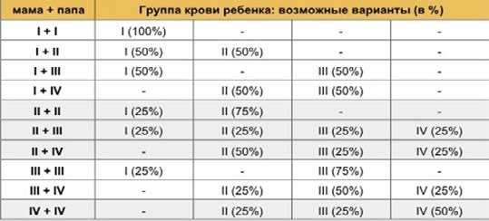
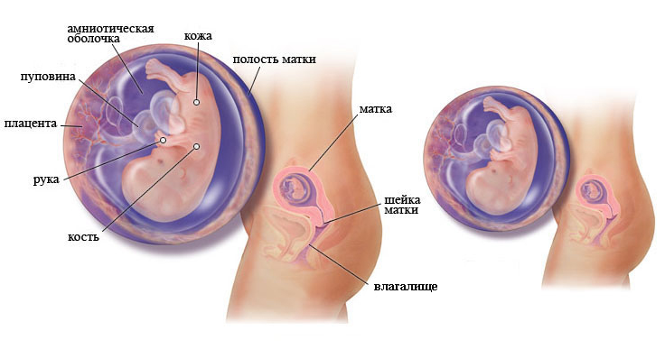

10 неделя беременности

Тельце малыша уже сформировано, теперь оно будет доразвиваться. Определяется группа крови ребенка.
Возможно, вас направят на первое плановое УЗИ.
Длина малыша: 3,1 см.
Вес малыша: 5 г.
Первые девять недель беременности были наиболее критичными для развивающегося организма, т.к. именно в этот период опасное воздействие лекарственных препаратов на плод было наиболее высоко.
С началом десятой недели подобные опасности начинают уменьшаться, но это не значит, что теперь можно принимать лекарства, не посоветовавшись со своим врачом.
К 10 неделе крошечное тельце у плода уже сформировано, теперь в течение 30 недель оно будет доразвиваться и усовершенствоваться.
Уже сформированы лицо и нижняя челюсть эмбриона, но лицевые мускулы еще только начинают свое развитие. На данном этапе идет процесс активного формирования верхней губы. Нос плода плотно покрыт слизистым слоем, он еще не сформирован полностью, но уже появились обонятельные рецепторы.
Конечно, гениталии определить пока невозможно, но если развивающийся плод мужского пола, то выработка тестостерона уже началась.
В эритроцитах плода также происходят изменения: появляются агглютиногены (Rh и A, B, M, N), отвечающие за группу крови малыша.
Определение группы крови малыша
Начинают образовываться мышечные ткани ротовой полости. Язык малыша покрывается вкусовыми сосочками.
Постепенно развивается жевательная мускулатура. Формируются системы мышц шеи и глотки.
Желудок плода перемещается книзу брюшной полости и занимает свое положенное место. Теперь он будет активно расти и преобразовываться, готовясь к началу функционирования.
Начат процесс формирования нервных окончаний.
Сердце плода бьется с невероятной скоростью, составляющей порядка 160–170 ударов в минуту. Ваш малыш продолжает активно расти.
Теперь малыш может непроизвольно двигаться, комфортно разместившись в амниотической жидкости внутри плодного пузыря. В скором времени он начнет сосать пальчик.
Внутриутробное развитие плода на 10 неделе беременности
ВАШ ОРГАНИЗМ
На десятой неделе беременности вас могут по-прежнему мучить приступы раннего токсикоза. Это неприятное явление может даже несколько усилиться, поэтому будущей маме необходимо набраться терпения и стараться следовать рекомендациям врача для облегчения собственного состояния.
К тошноте и рвоте может присоединиться еще и изжога. Происходит это потому, что мышцы, отделяющие пищевод от желудка, сокращаются, тем самым позволяя его содержимому подниматься в пищевод.
При этом желудочная кислота начинает раздражать чувствительную слизистую пищевода, женщина чувствует это, как ощущение жжения в груди, а в некоторых случаях и боли. Поэтому у беременных иногда болит живот на 10 неделе беременности, колики возникают чуть выше пупка, в районе желудка. Все эти неприятные симптомы могут мучить беременную вплоть до наступления родов.
Продолжаются частые позывы в туалет. Это связано с давлением, которое оказывает увеличившаяся в размерах матка, на мочевой пузырь. В некоторых случаях к частым позывам в туалет может присоединиться еще и недержание мочи, особенно при кашле, смехе или чихании. Данное явление более характерно для повторных беременностей, а также для более высоких сроков, но может проявиться уже сейчас.
ЗДОРОВЫЕ СОВЕТЫ
Очень полезны будут утренние и вечерние прогулки пешком.
Также можно заняться плаванием. Занятия спортом в легкой форме, помогут выносить на себе на протяжении всей беременности лишние килограммы, благополучно пережить роды и быстро вернуться в отличную физическую форму.
К питанию также нужно подойти ответственно: есть мелкими порциями, но часто, при этом пища должна быть теплой и приносить истинное удовольствие мамочке. Процедура взвешивания должна стать обязательной. Кроме того, в первом триместре нужно следить за работой (опорожнением) кишечника, поскольку наполненная прямая кишка оказывает давление на матку, а это крайне нежелательно.
Устранить запоры можно с помощью черного хлеба, свежих натуральных фруктов и овощей, богатых клетчаткой. Также слабительным действием обладает холодная вода (кипяченная!), выпитая натощак маленькими глотками, или кефир, выпитый на ночь. А вот клизмы и настои из трав, обладающих слабительным действием, даже в редких случаях не рекомендуется использовать.
Стоит помнить, что на 10-12 неделе беременности проводят первое плановое УЗИ. Если оборудование позволяет, можно наблюдать довольно мелкие детали. Иногда существует возможность запечатлеть первое УЗИ на видео или сделать фото плода, в такой случае мамочке предоставляется возможность в любой момент любоваться своим малышом.
9 неделя 11 неделя